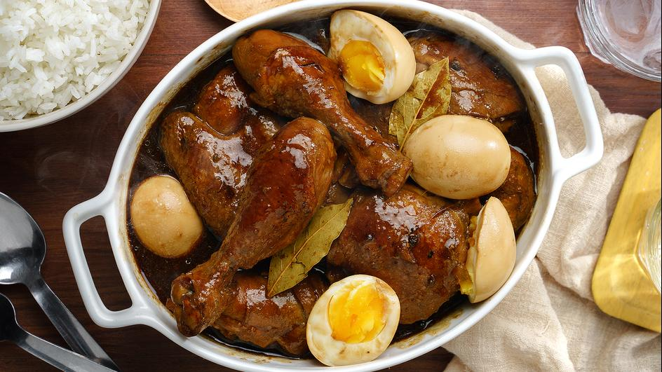
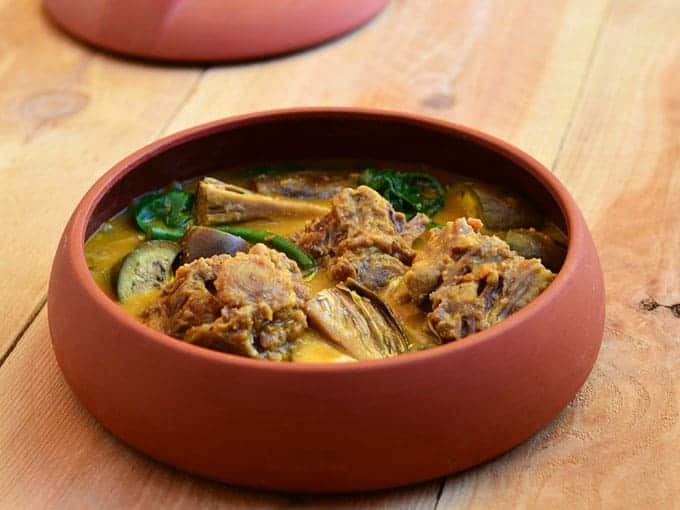
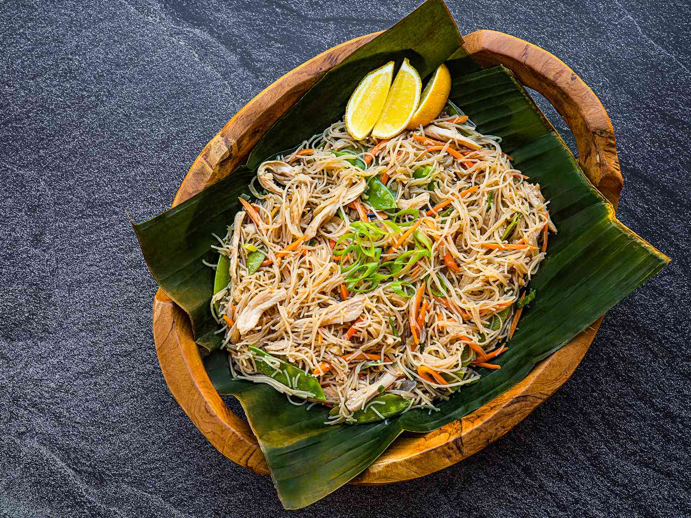
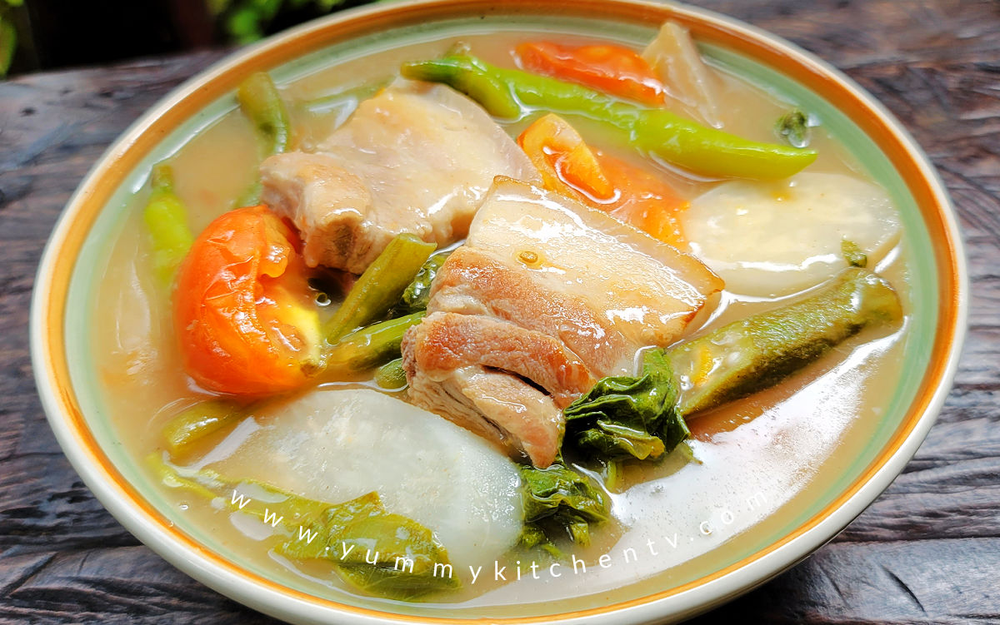
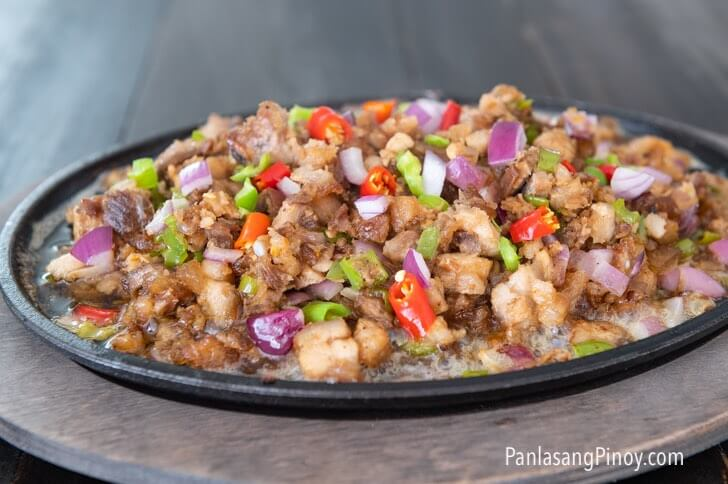

Popular Recipes

ADOBODelicous and tasty marinated Filipino chicken adobo with soy sauce, vinegar, and garlic. This is best paired with warm rice and a drink. Read more> |

FRIED RICEDiced vegetables and fluffy cooked rice are stir-fried with savory eggs and seasoned with soy sauce for a quick and satisfying weeknight meal. Read more> |

KARE-KAREA rich Filipino stew featuring tender oxtail or beef in a savory peanut sauce. Vegetables like eggplant, green beans, and bok choy add a delightful textural contrast. Read more> |

PANCIT BIHONPancit bihon is a stir-fried Filipino noodle dish made with thin rice noodles, vegetables, meat, and a savory sauce. It's a quick and flavorful meal perfect for any occasion. Read more> |

SINIGANGA sour soup native to the Philippines. This recipe uses pork as the main ingredient. Other proteins and seafood can also be used to cook sinigang. Read more> |

SISIGSpicy chopped pork face and ears are boiled, grilled, chopped again, and then stir-fried with aromatics, chilies, and calamansi for a tangy, flavorful Filipino dish. Read more> |